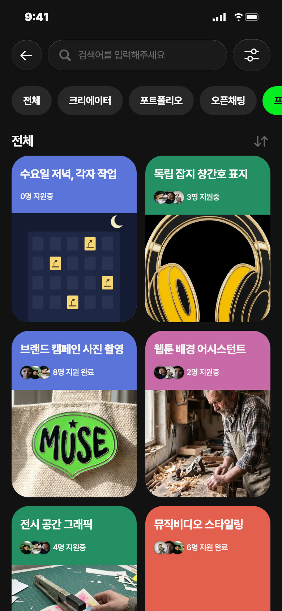
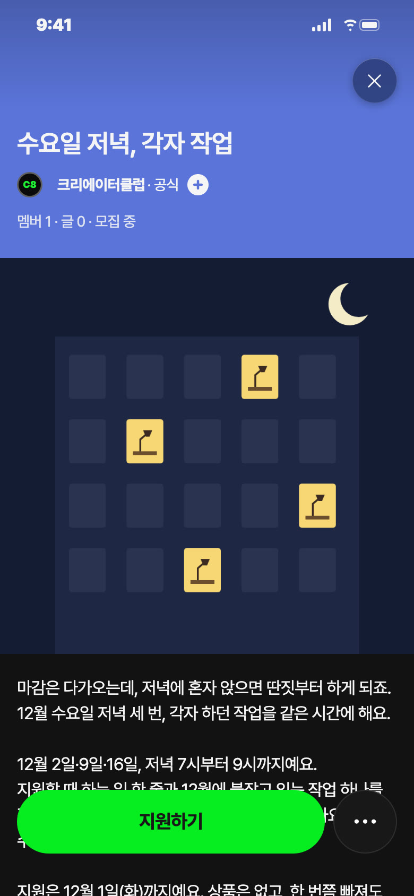
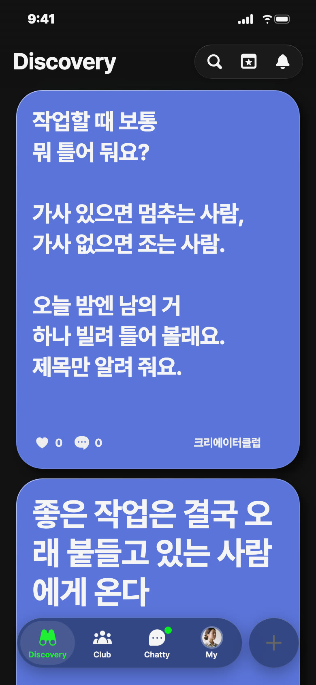
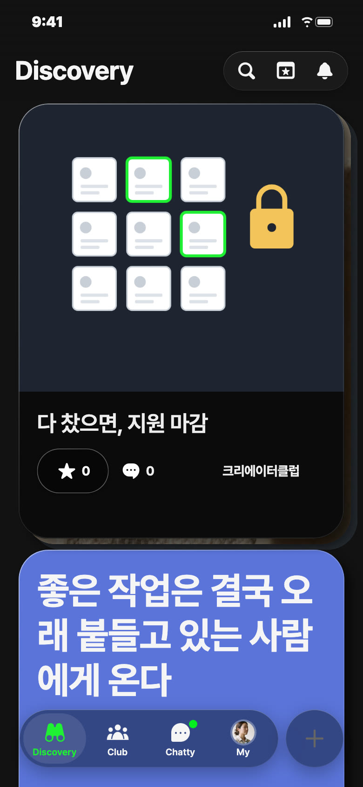
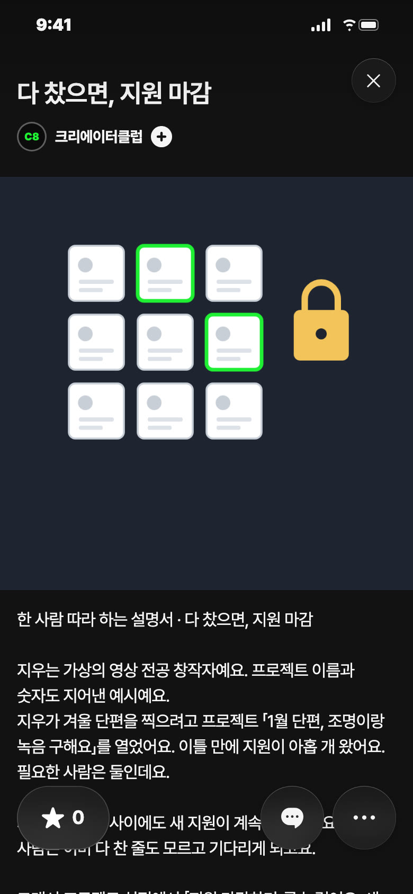

C8 앱 게시 시안 · 2026. 11. 25. 수요일 · 오늘 추천 프로젝트
오늘 추천 · 프로젝트 · 오늘 낮 12시 · 파랑


왜 오늘: 수요일 1순위 프로젝트 — 12월 마감철, 같은 시간에 각자 작업하는 판(날짜 셋·시간 정해진 판).
보낼 사람: 졸작 끝나고 포폴 정리 미루는 동기에게 「수요일에 같이 켜자」
받고 싶은 지원 채팅: 예시·가상: 그래픽 디자인 해요. 12/10 마감 공모전 포스터 붙잡고 있어요.
게시 전: 수락할 운영자 한 사람, 앱 26.46.0 이상(게시판·일정).
제목
수요일 저녁, 각자 작업
모집 내용
12월 수요일 저녁 세 번(12/2·9·16, 7~9시) 각자 작업을 같은 시간에 할 사람을 찾아요. 하는 일 한 줄과 12월에 붙잡고 있는 작업 하나를 적어 주세요.
설명
마감은 다가오는데, 저녁에 혼자 앉으면 딴짓부터 하게 되죠. 12월 수요일 저녁 세 번, 각자 하던 작업을 같은 시간에 해요. 12월 2일·9일·16일, 저녁 7시부터 9시까지예요. 지원할 때 하는 일 한 줄과 12월에 붙잡고 있는 작업 하나를 적어 주세요. 공모전, 졸작 정리, 외주, 뭐든 괜찮아요. C8이 수락하면 세 번의 수요일을 일정에 넣어 둘게요. 지원은 12월 1일(화)까지예요. 상품은 없고, 한 번쯤 빠져도 괜찮아요. 7시에 게시판에 오늘 할 것 한 줄을 올리고 각자 작업해요. 말은 안 걸어도 돼요. 9시엔 어디까지 했는지 한 장 올리고 끝내요. 덜 끝났으면 덜 끝난 그대로요. 마지막 수요일 9시엔, 첫 주에 올린 한 줄이랑 나란히 놓고 봐요.
비축 · 영감 · 게시일 미정 · 파랑

왜 지금: 연말 마감철 밤 작업, 작업할 때 트는 소리 — 댓글이 다른 회원이 빌려 쓸 목록이 됨.
보낼 사람: 밤새 작업하는 동기에게 「너 그 빗소리 뭐였지, 여기 적어」
받고 싶은 댓글: 예시·가상: 류이치 사카모토 〈async〉요. 가사 없는데 안 졸려요.
참고: 배경색은 앱이 무작위로 정해요. 시안 색은 예시.
영감 글
작업할 때 보통 뭐 틀어 둬요? 가사 있으면 멈추는 사람, 가사 없으면 조는 사람. 오늘 밤엔 남의 거 하나 빌려 틀어 볼래요. 제목만 알려 줘요.
비축 · 포트폴리오 · 설명서 다음 편 후보 · 게시일 미정


왜 지금: 프로젝트를 여는 회원이 처음 겪는 일 — 지원 마감·다시 모집 기능 하나.
보낼 사람: 졸작 팀원 구하는 친구에게 「다 찼으면 마감 눌러」
받고 싶은 댓글: 예시·가상: 마감 버튼 있는 줄 몰라서 한 명씩 거절했어요.
확인 범위: iOS 26.46.0 태그 코드. 실기기 화면은 나나 확인 전.
제목
다 찼으면, 지원 마감
설명
한 사람 따라 하는 설명서 · 다 찼으면, 지원 마감 지우는 가상의 영상 전공 창작자예요. 프로젝트 이름과 숫자도 지어낸 예시예요. 지우가 겨울 단편을 찍으려고 프로젝트 「1월 단편, 조명이랑 녹음 구해요」를 열었어요. 이틀 만에 지원이 아홉 개 왔어요. 필요한 사람은 둘인데요. 지원서를 읽는 사이에도 새 지원이 계속 들어왔어요. 늦게 온 사람은 이미 다 찬 줄도 모르고 기다리게 되고요. 그래서 프로젝트 설정에서 「지원 마감하기」를 눌렀어요. 새 지원은 더 안 받지만, 이미 받은 아홉 개는 그대로 남아서 천천히 읽고 수락하거나 거절할 수 있어요. 모집 공고엔 「지원 마감」이 떠요. 일주일 뒤 녹음 맡은 사람이 사정이 생겨 빠졌어요. 지우는 같은 설정에서 「다시 모집하기」를 눌렀고, 모집 공고에 「지원하기」가 다시 켜졌어요. 이번엔 한 명만 받고, 바로 다시 마감했어요.